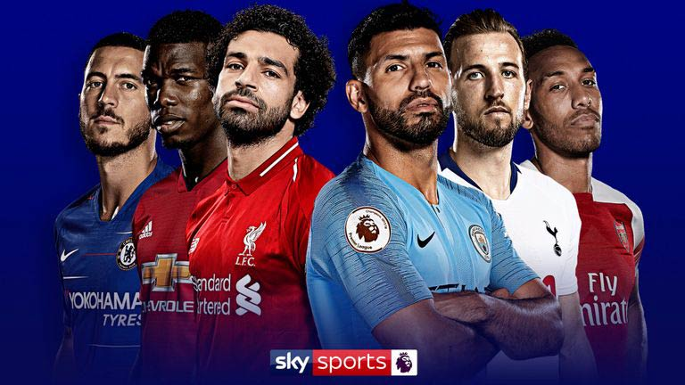
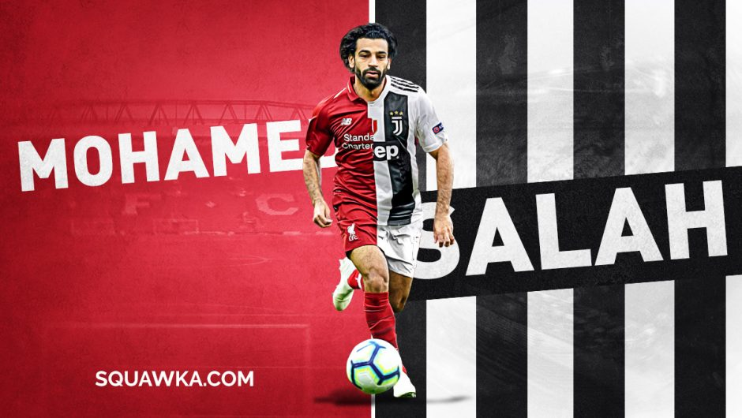
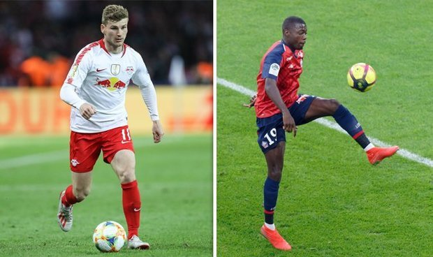

Home
<<<საფეხბურთო სიახლეები>>>
2019 <<<ტრანსფერები>>>
<<<კონტაქტი>>>

სატრანსფერი სიახლეები
სატრანსფერო ფასები
შემდგარი ტრანსფერები
ქართველი ფეხბურთელების ტრანსფერები

სალაჰი იუვეშიიი?
აზარი მადრიდის რეალის ფეხბურთელია

ლივერპული ფორვარდის ძიებაშია